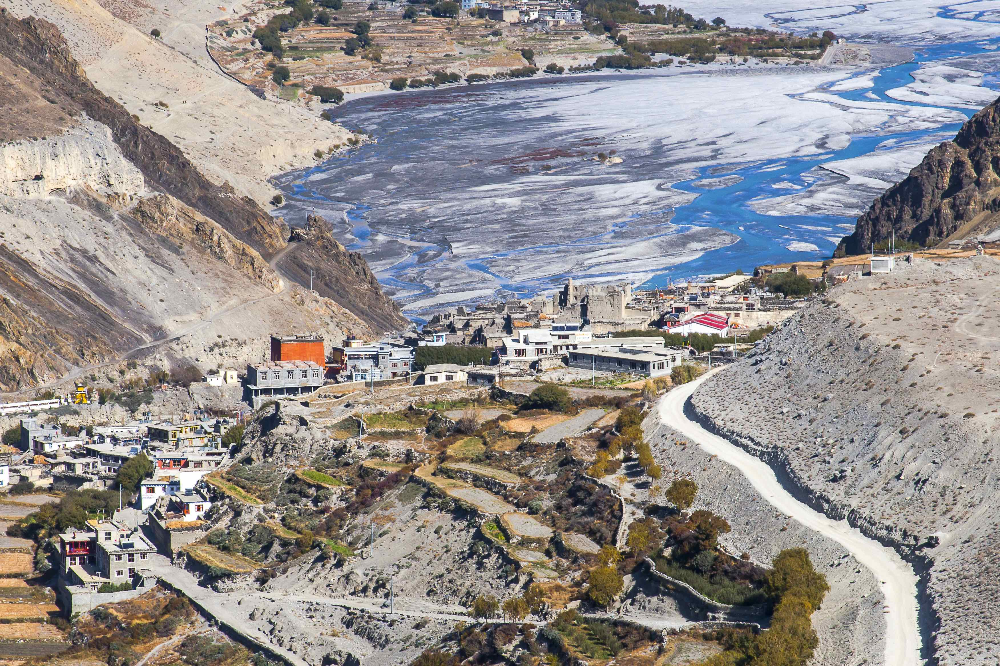
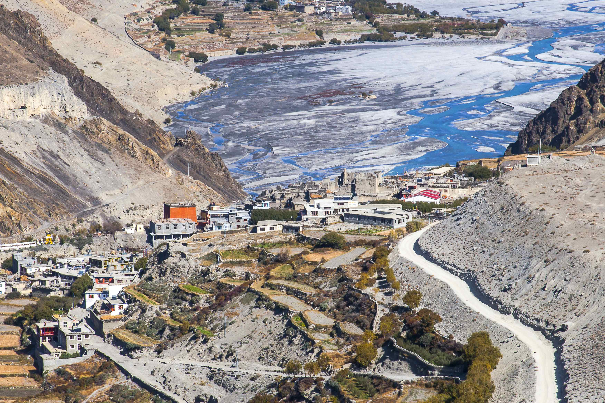

Tourism In Nepal

Tourism is the largest industry in Nepal and its largest source of foreign exchange and revenue. Possessing eight of the ten highest mountains in the world, Nepal is a hot spot destination for mountaineers, rock climbers and people seeking adventure. The Hindu and Buddhist heritage of Nepal and its cool weather are also strong attractions. Mount Everest, the highest mountain peak in the world, is located in Nepal. Mountaineering and other types of adventure tourism and ecotourism are important attractions for visitors. The world heritage site Lumbini, birthplace of Gautama Buddha, is located in the south of the West region of Nepal (which despite the name is located in the center of the country) and there are other important religious pilgrimage sites throughout the country. The tourist industry is seen as a way to alleviate poverty and achieve greater social equity in the country. Tourism brings $471 millions a year to Nepal According to statistics of 2012, there was a slow growth rate of 9.8%.[out of date] According to statistics from Nepal Tourism Board (NTB), a total of 598,204 foreign tourists entered the country via aerial route in 2012. The government of Nepal declared 2011 to be Nepal Tourism Year, and hoped to attract one million foreign tourists to the country during that year.The government of Nepal has also declared Lumbini Tourism Year 2012 to promote Lumbini. The government of Nepal has also recently declared Visit Nepal 2020 with the aim of bringing in two million tourists by 2020. According to the statistics of 2017, most of the tourists comes to Nepal for observing the pilgrimage sites and heritages sites of our country i.e. 70.3%, then 34.5% of them comes here at holiday for pleasure, 13.1% of them come here for mountaineering and trekking and remaining 18.0% of the tourists comes here for official activities, conferences, business etc. Tourism in Nepal was badly affected, at least temporarily, by the series of earthquakes in 2015.


 

Famous Tourist places in Nepal
- Kathmandu
- Pokhara
- Mustang
- Manang
- Janakpur
- Chitwan
- Bhaktapur
- Lukla
- Namche Bazar